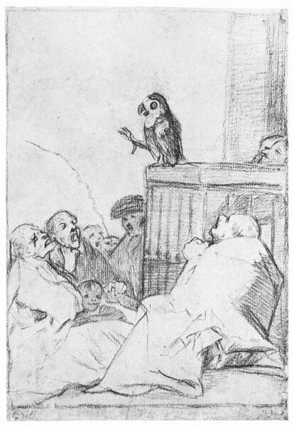

Francisco Goya,1746 - 1828,Romanticism,Spanish,"Francisco José de Goya y Lucientes (; Spanish: [fɾanˈθisko xoˈse ðe ˈɣoʝa i luˈθjentes]; 30 March 1746 – 16 April 1828) was a Spanish romantic painter and printmaker. He is considered the most important Spanish artist of the late 18th and early 19th centuries and throughout his long career was a commentator and chronicler of his era. Immensely successful in his lifetime, Goya is often referred to as both the last of the Old Masters and the first of the moderns. He was also one of the great contemporary portraitists.He was born to a modest family in 1746 in the village of Fuendetodos in Aragon. He studied painting from age 14 under José Luzán y Martinez and moved to Madrid to study with Anton Raphael Mengs. He married Josefa Bayeu in 1773; their life was characterised by an almost constant series of pregnancies and miscarriages, and only one child, a son, survived into adulthood. Goya became a court painter to the Spanish Crown in 1786 and this early portion of his career is marked by portraits of the Spanish aristocracy and royalty, and Rococo style tapestry cartoons designed for the royal palace.",http://en.wikipedia.org/wiki/Francisco_Goya,291
